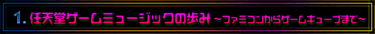
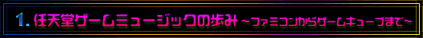

|  |
|  |
| 1989年に、携帯型ゲーム機としてゲームボーイが発売されました。『テトリス』などのヒットソフトが発売され、やがてゲームボーイは世界中に普及します。ファミコン時代にはモノラルだった音源が、ステレオになったことも大きな出来事でした。 |
| −−ゲームボーイの音楽を作る際には、どんな点が難しかったですか。 |
| 戸高 やっぱり発音数の少ない中で効果音や音楽を作らないといけないので、苦労はファミコンと同じです。ゲームボーイはファミコンと同じく、同時に出せる音が３音なんです。でも、１音だけ自由に自分で波形（注１）を書けるんですね。それにだいぶ助けられました。 |
| −−ゲームボーイはファミコンと同じ機材を使って音楽を作るんですか？ |
| 戸高 同じです。ただ、僕の時は鍵盤が大きくなっていましたけど（笑）。近藤さんと同じように、会社に入ってからプログラムを勉強して、作っていきました。 |
| −−少ない容量の中で音楽を作るために、どんな工夫をしましたか。 |
| 戸高 効果音を入れると曲が入らないとか、そういうこともありましたね。いったん曲を作ってから、１コ１コ音を目立たないように消していって、容量を少なくしていったりとか。慣れてくると、容量をきりつめつつ、曲作りをすることができるようになるんですよ。いくらいい曲であっても、やみくもに作るのではダメなんです。使い回しのできるフレーズやパターンを上手に作っていって、曲としてもちゃんと聴けるように仕上げていくんですよ。 |
| −−そういった曲作りのコツは、だんだんつかんでいくものなんですか。 |
| 戸高 そうですね。逆に、制約みたいなものがおもしろくなってきましたね。小さなパターンをどれだけのバリエーションで作れるかという挑戦ですよね。そういうメディアはほかにはないので。 |
| −−ゲームボーイでは、ステレオ出力になりましたよね。「ファミコンより進化した！」という感触はありましたか。 |
| 戸高 擬似ステレオなんですけどね。左90度、右90度、真ん中のどれかしか鳴らないんです。でも、たとえばファンファーレとか「やったー」という感じを出す時に、それまでモノラルだった音をステレオで出したりすると、音のインパクトが強くなって効果的だったと思います。『Ｘ』の時はワイヤーフレームを使ったソフトだったんで、絵に奥行きとかがあったんです。だから、音の面でも、レーザーがこっちに向かって撃ってくるような立体感を出すようにしました。ファミコンから比べたら、いろいろな面でよくなっていたと思います。 |